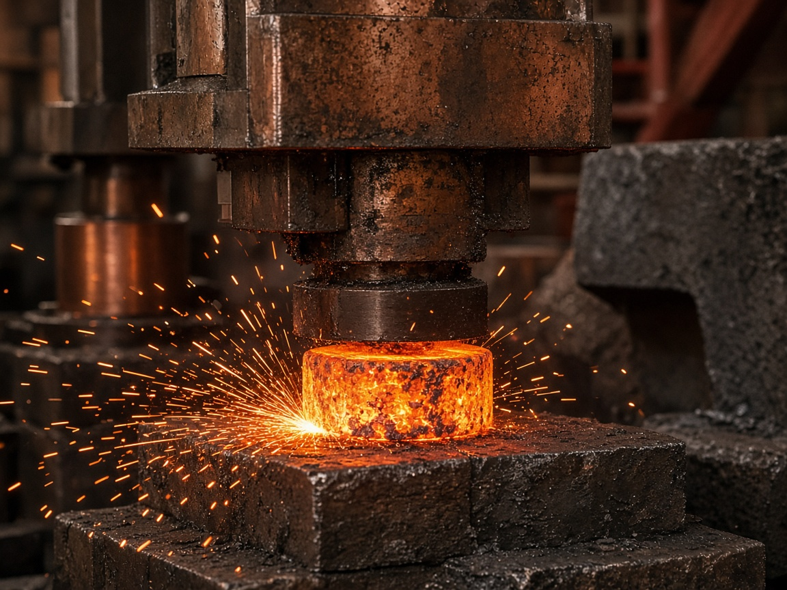
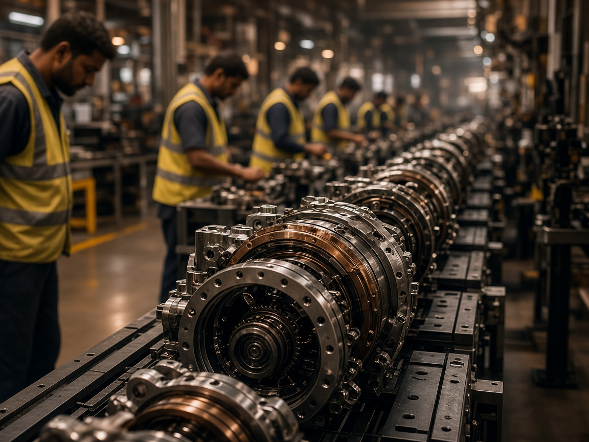
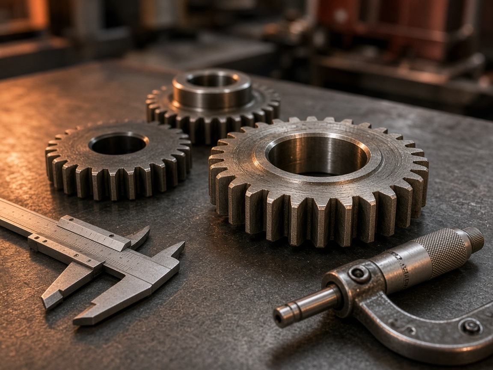
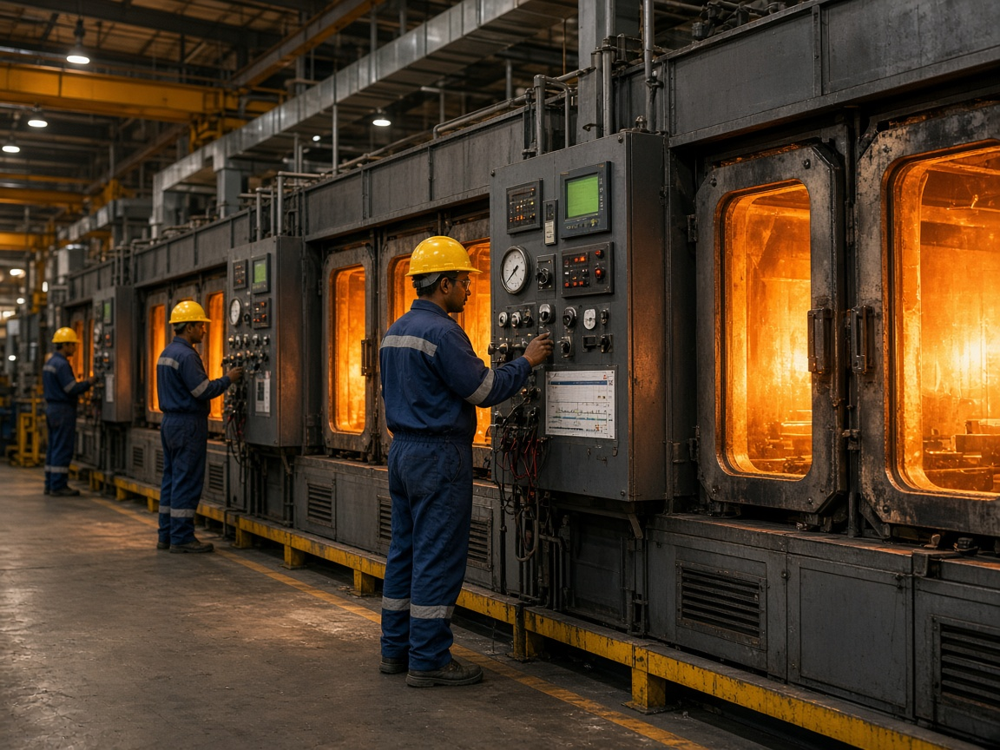
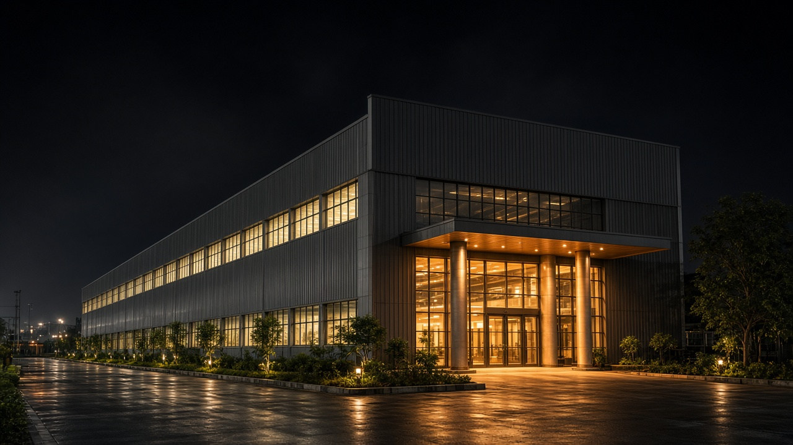

Morning shift walk
Start at Plant 2 CNC, then forge, heat treat, and metrology. PPE and visitor badges issued at Gate 2 — allow 15 minutes for security.
Gallery
Machines, metal, and monsoon light — a look at how Aarohan parts move from billet to bay.
Photo journal
These frames are from Plants 1–4 across day and night shifts. Click any image to enlarge. Filters help you jump between floor, process, and campus views.









Plant 1
Closed-die forging is still the heartbeat of Aarohan. Billets heat, dies close, and grain flows into knuckles and hubs that will later see Indian highways and rail corridors.
Die try-out happens on the same campus — so when a Pune OEM asks for a geometry tweak, we don’t wait on an outstation toolroom.
Plant 3
Carburising and induction recipes are charted per heat. Operators watch atmosphere panels the way a railway driver watches signals — small drifts get logged before they become scrap.
Every temper batch ties back to the forge lot, so your SQA can follow hardness from billet to box.
People
New setters and inspectors spend time in Aarohan Gurukul — bilingual sessions covering 5S, poka-yoke, gauge care, and how to stop a line without fear.
We believe a confident “ruko” on the floor saves more cost than a late CAPA after a customer visit.
Visit notes
Start at Plant 2 CNC, then forge, heat treat, and metrology. PPE and visitor badges issued at Gate 2 — allow 15 minutes for security.
Half-day for CMM demos, control plan review, and live SPC screens. Bring drawings you want us to map against current capability.
Approved zones only. No phones near customer-confidential fixtures. We can provide a cleared media kit on request.
October–February for clear light and fewer monsoon delays. Festival weeks need advance booking — plants still run, but tour windows shrink.
Media kit
We share approved photography with OEM marketing and sourcing teams on request — plus a short campus fact sheet in English and Hindi.